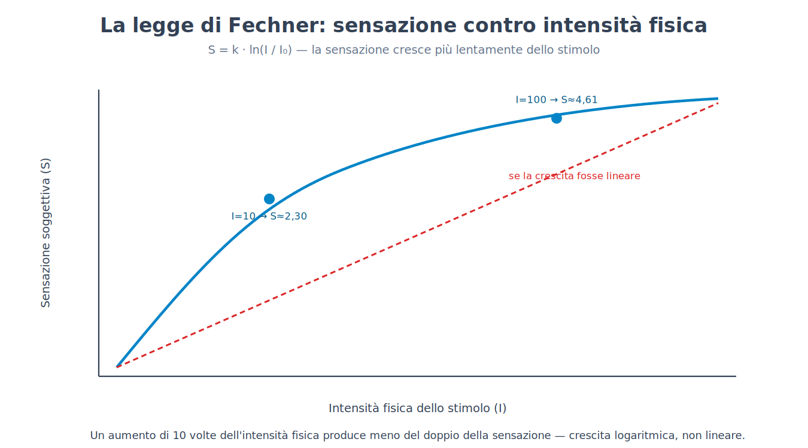
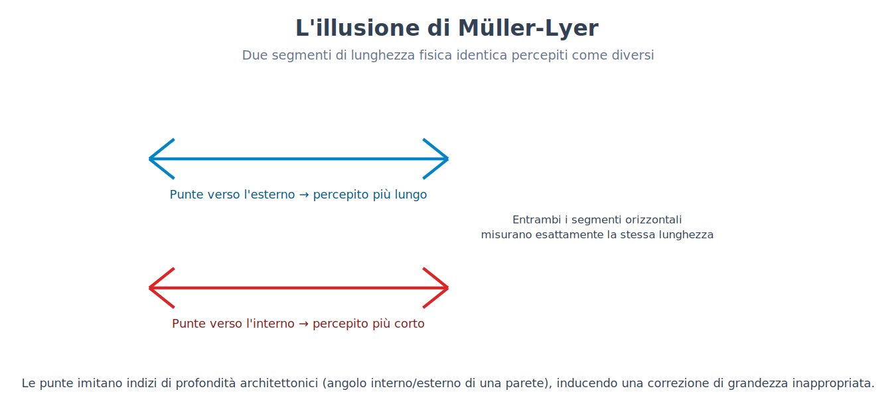
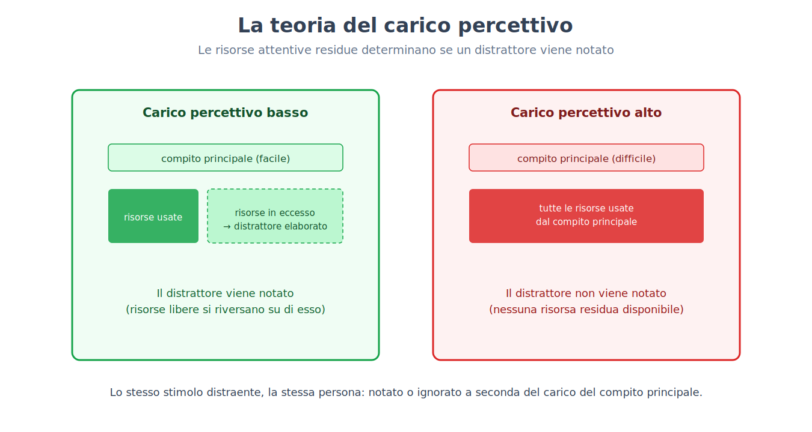
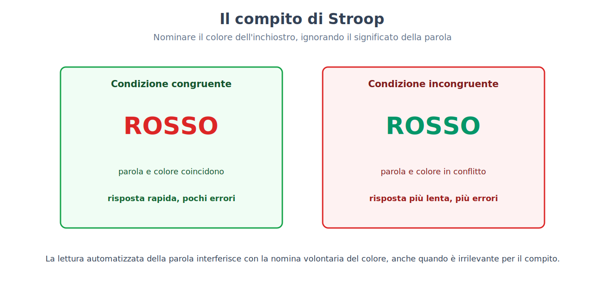
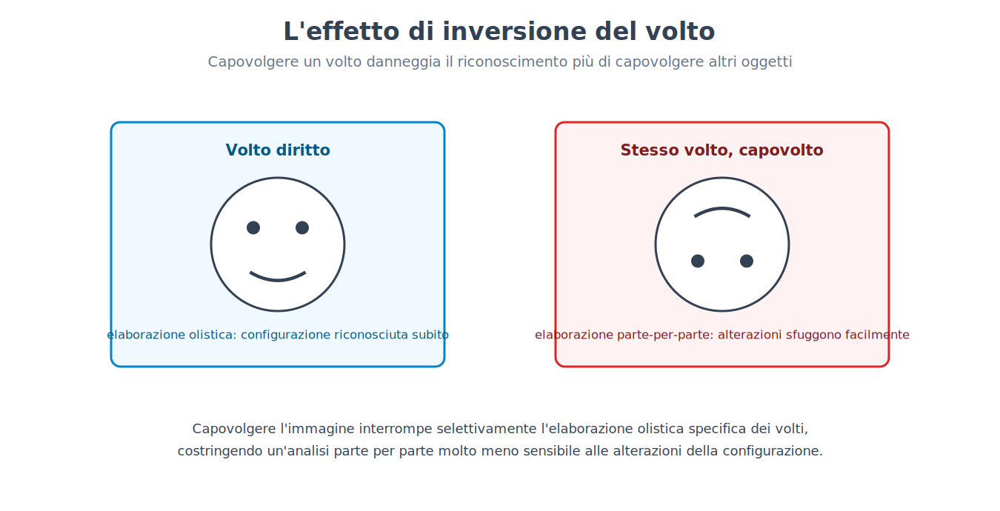
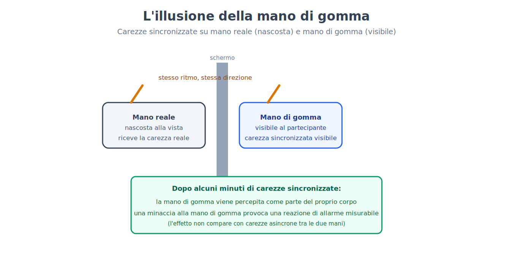

Parte V. Percezione e attenzione
Capitolo 28 — Dalla trasduzione alla sensazione
[IN DUE PAROLE]
Il capitolo 7 ha introdotto la psicofisica come lo studio quantitativo del rapporto tra intensità fisica di uno stimolo e intensità della sensazione percepita. Questo capitolo espone quel rapporto per intero: come si misura una soglia, perché la relazione tra stimolo e sensazione non è lineare, con quale formula si descrive, e perché un sistema sensoriale smette di segnalare ciò che resta costante.
La soglia assoluta e la soglia differenziale
Un sistema sensoriale non risponde a qualunque quantità di energia fisica: esiste una soglia assoluta (absolute threshold), l'intensità minima di uno stimolo rilevabile in metà delle prove, sotto la quale lo stimolo è presente ma non produce alcuna sensazione riportabile. Una seconda soglia, distinta e altrettanto centrale, è la soglia differenziale (difference threshold) o differenza appena percepibile (JND, just noticeable difference): la più piccola variazione di intensità che un osservatore riesce a rilevare rispetto a uno stimolo di riferimento.
La scoperta cruciale, fatta a metà Ottocento, è che la soglia differenziale non è una quantità fissa, espressa in unità assolute (grammi, decibel, candele), ma una proporzione costante dell'intensità di partenza. Per rilevare che un peso è aumentato, non serve un incremento assoluto fisso: serve un incremento proporzionale alla dimensione del peso di partenza. Sollevare due pesi di 100 e 102 grammi permette di distinguerli; sollevare due pesi di 1000 e 1002 grammi, con lo stesso incremento assoluto di 2 grammi, non lo permette — perché il rapporto tra incremento e base è ormai troppo piccolo.
[FORMULA]
La legge di Weber (Weber's law) formalizza questa proporzionalità:
ΔI / I = k
Dove:
• ΔI è la differenza appena percepibile, cioè il più piccolo incremento di intensità rilevabile.
• I è l'intensità dello stimolo di riferimento.
• k è la frazione di Weber (Weber fraction), una costante specifica per ciascuna modalità sensoriale (non un valore universale): circa 0,02 per la discriminazione di pesi, circa 0,08 per la luminosità, circa 0,05 per l'intensità sonora.
Esempio di calcolo. Con k = 0,02 (discriminazione di pesi) e un peso di riferimento I = 200 g, la differenza appena percepibile è:
ΔI = k · I = 0,02 · 200 g = 4 g
Occorrono quindi almeno 4 grammi di differenza per notare che un secondo peso è più pesante del primo. Ma con un peso di riferimento dieci volte più grande, I = 2000 g, la stessa costante k = 0,02 richiede:
ΔI = 0,02 · 2000 g = 40 g
Non 4 grammi come nel caso precedente: la differenza necessaria è cresciuta in proporzione alla base, non è rimasta fissa. È esattamente questo il fenomeno che la legge descrive.
A partire dalla legge di Weber, il fisiologo e filosofo che le diede il nome derivò una seconda relazione, questa volta tra l'intensità fisica dello stimolo e l'intensità soggettiva della sensazione lungo l'intera gamma percepibile, non solo al margine di una singola discriminazione.
[FORMULA]
La legge di Fechner (Fechner's law):
S = k · ln(I / I₀)
Dove:
• S è l'intensità soggettiva della sensazione.
• I è l'intensità fisica dello stimolo.
• I₀ è l'intensità della soglia assoluta, il punto in cui la sensazione comincia a esistere.
• k è una costante specifica della modalità sensoriale.
• ln è il logaritmo naturale.
La conseguenza pratica è che la sensazione cresce più lentamente dell'intensità fisica: raddoppiare la luminosità di una lampada non raddoppia la luminosità percepita, perché il rapporto è logaritmico, non lineare.
Esempio di calcolo. Poniamo k = 1 e I₀ = 1 (unità arbitrarie, scelte solo per isolare l'andamento della funzione). A un'intensità fisica I = 10 (dieci volte la soglia) corrisponde una sensazione:
S = 1 · ln(10 / 1) = ln(10) ≈ 2,30
Portando l'intensità fisica a I = 100 — dieci volte più intensa di prima, cento volte la soglia — la sensazione diventa:
S = 1 · ln(100 / 1) = ln(100) ≈ 4,61
Un aumento di dieci volte dell'intensità fisica (da 10 a 100) ha prodotto un aumento della sensazione esattamente del doppio (da 2,30 a 4,61, perché ln 100 = 2 · ln 10), non di dieci volte: è esattamente questo lo scarto tra crescita fisica ed effetto soggettivo che la formula descrive. Un aumento che è enorme in termini fisici assoluti (da una lampadina a un faro) produce un aumento della sensazione molto più modesto di quanto l'aumento fisico farebbe pensare — una delle ragioni per cui scale come i decibel per il suono o i diaframmi per l'esposizione fotografica sono esse stesse logaritmiche: sono costruite per corrispondere a come il sistema percettivo effettivamente risponde, non a come l'energia fisica si distribuisce.

[IL DISEGNO DELL'ESPERIMENTO]
Il problema. Misurare una soglia richiede un criterio operativo: "il punto in cui una sensazione comincia a esistere" non è osservabile direttamente, solo inferibile dal comportamento riportato da chi la sperimenta.
Il metodo. I metodi psicofisici classici, sviluppati a metà Ottocento e ancora alla base della psicofisica moderna, presentano stimoli di intensità nota e crescente o decrescente (metodo dei limiti), oppure stimoli disposti in ordine casuale attorno al valore atteso della soglia (metodo degli stimoli costanti), registrando sistematicamente in quale percentuale delle prove lo stimolo viene rilevato. La soglia assoluta viene definita, per convenzione operativa, come l'intensità rilevata nel 50% delle prove — non 0% né 100%, perché la rilevazione a una soglia fisiologicamente reale è comunque probabilistica, non un interruttore netto.
Perché conta. Questo approccio ha reso misurabile, con precisione numerica riproducibile, un fenomeno — l'esperienza soggettiva di una sensazione — che sembrerebbe per natura sottratto alla misura quantitativa. È il modello metodologico che l'intera psicologia sperimentale, non solo la percezione, ha ereditato: rendere osservabile e numerico ciò che è internamente vissuto, tramite un compito comportamentale ben definito.
L'adattamento sensoriale
Un secondo fenomeno, distinto dalla soglia ma altrettanto sistematico, è l'adattamento sensoriale (sensory adaptation): l'esposizione prolungata e costante a uno stimolo riduce progressivamente la risposta del sistema sensoriale a quello stimolo, mentre la sensibilità a un cambiamento resta intatta o addirittura aumenta. Chi entra in una stanza buia dopo essere stato all'aperto in pieno sole non vede nulla per i primi minuti; la sensibilità visiva aumenta poi progressivamente (adattamento al buio, dark adaptation) fino a un fattore di diecimila o più rispetto alla condizione iniziale, un processo che nell'occhio umano richiede tipicamente venti-trenta minuti per completarsi.
[ATTENZIONE AL SALTO]
È facile pensare all'adattamento come un semplice "affaticamento" del sistema sensoriale, un cedimento passivo. Non è così: l'adattamento è un meccanismo attivo e funzionalmente utile, non un difetto. Un sistema sensoriale che continuasse a segnalare con la stessa intensità uno stimolo costante (l'odore della propria casa, la pressione dei vestiti sulla pelle, il ronzio di fondo di un elettrodomestico) sprecherebbe risorse su un'informazione ormai priva di valore predittivo — ciò che è rimasto uguale non richiede una nuova risposta. Adattandosi al costante, il sistema resta libero di reagire con piena sensibilità a ciò che cambia, che è quasi sempre l'informazione rilevante per il comportamento.
L'adattamento non è un fenomeno esclusivamente visivo: chi si immerge in una piscina fredda smette di percepire il freddo come intollerabile dopo alcuni minuti, non perché la temperatura dell'acqua sia cambiata, ma perché i recettori termici hanno ridotto la loro risposta a una condizione ormai costante; allo stesso modo, un odore intenso percepito entrando in un ambiente (una cucina, una stalla, un laboratorio chimico) diventa via via meno percepibile per chi vi resta, restando invece pienamente evidente per chi vi entra in quel momento — la differenza tra i due osservatori non è nella sensibilità del naso, ma nella storia recente di esposizione a quello stimolo specifico.
[MINI-CRONOLOGIA]
• Metà Ottocento — Weber formula la legge che porta il suo nome a partire da esperimenti sulla discriminazione di pesi.
• 1860 — Fechner pubblica Elemente der Psychophysik, generalizzando la legge di Weber in una relazione tra stimolo fisico e sensazione soggettiva, e fondando così la psicofisica come programma di ricerca quantitativo — l'antecedente storico introdotto nel capitolo 7.
• Anni '50-'60 del Novecento — la teoria della rilevazione del segnale (signal detection theory) perfeziona il metodo psicofisico classico, separando la sensibilità reale di un osservatore dal suo criterio di risposta (quanto è disposto a rischiare un falso allarme pur di non perdere un segnale debole) — una distinzione che i metodi ottocenteschi non permettevano di isolare.
• Oggi — i metodi psicofisici classici restano lo strumento di base per calibrare stimoli sperimentali in tutta la ricerca su percezione e attenzione, incluse le tecniche sperimentali dei capitoli successivi di questa parte.
[IL PUNTO CHIAVE DEL CAPITOLO]
• La soglia assoluta è l'intensità minima rilevabile nel 50% delle prove; la soglia differenziale (JND) è la più piccola variazione rilevabile rispetto a uno stimolo di riferimento.
• La legge di Weber (ΔI/I = k) mostra che la soglia differenziale è proporzionale, non assoluta: la stessa differenza fisica è rilevabile o no a seconda della base di partenza.
• La legge di Fechner (S = k · ln(I/I₀)) descrive una crescita della sensazione più lenta di quella dello stimolo fisico, di forma logaritmica.
• L'adattamento sensoriale non è un cedimento del sistema, ma un meccanismo che libera risorse per rispondere al cambiamento, ignorando ciò che è rimasto costante.
Capitolo 29 — La percezione come inferenza
[IN DUE PAROLE]
La retina riceve un'immagine bidimensionale, ambigua e incompleta; ciò che si percepisce è un mondo tridimensionale, stabile e pieno di oggetti riconoscibili. Questo capitolo espone perché la percezione va intesa come un processo attivo di inferenza a partire da dati incompleti, non come una registrazione passiva del mondo — e perché le illusioni ottiche, lungi dall'essere difetti, sono la prova più diretta di questo meccanismo.
L'inferenza inconscia
L'immagine proiettata sulla retina è, dal punto di vista puramente geometrico, radicalmente sottodeterminata rispetto alla scena reale: la stessa immagine retinica bidimensionale può in linea di principio corrispondere a infinite scene tridimensionali diverse (un oggetto piccolo e vicino proietta la stessa immagine di un oggetto grande e lontano). Il sistema percettivo risolve questa ambiguità non registrando passivamente l'immagine, ma applicandole, in modo rapido e non consapevole, assunzioni statistiche su come è fatto tipicamente il mondo — un processo descritto già a metà Ottocento come inferenza inconscia (unconscious inference).
[ATTENZIONE AL SALTO]
Il termine "inconscio" qui non ha nulla a che vedere con l'inconscio dinamico descritto nel capitolo 8: non si tratta di contenuti rimossi perché psicologicamente inaccettabili, ma di calcoli percettivi che restano semplicemente fuori dalla portata dell'introspezione, per lo stesso motivo per cui non si è consapevoli del calcolo che permette di stare in equilibrio camminando. Il capitolo 31 tornerà su questa distinzione in modo esplicito, confrontando i due usi del termine "inconscio" che la psicologia ha ereditato da tradizioni molto diverse.
Costanze percettive
Il risultato pratico di questo processo inferenziale sono le costanze percettive (perceptual constancies): la capacità di percepire una proprietà di un oggetto come stabile nonostante l'immagine retinica che quell'oggetto proietta cambi continuamente. La costanza di grandezza (size constancy) permette di percepire una persona che si allontana come della stessa altezza, anche se la sua immagine retinica si restringe progressivamente — il sistema percettivo compensa automaticamente la distanza stimata. La costanza di colore (color constancy) permette di percepire un foglio bianco come bianco sia sotto la luce calda di una lampada a incandescenza sia sotto la luce fredda di un cielo nuvoloso, nonostante la composizione spettrale della luce che arriva effettivamente all'occhio sia, nei due casi, molto diversa: il sistema visivo stima e sottrae il colore della sorgente di illuminazione, non solo il colore riflesso dall'oggetto.
Le illusioni come finestre sul meccanismo
Se la percezione è inferenza, un'illusione ottica non è un errore casuale del sistema visivo, ma il prodotto delle stesse regole inferenziali che, nella grande maggioranza dei casi reali, producono una percezione corretta — applicate a una situazione costruita apposta perché quelle regole, questa volta, portino fuori strada.
[IL DISEGNO DELL'ESPERIMENTO]
Il fenomeno. Nell'illusione della scacchiera d'ombra, due caselle di una scacchiera, fisicamente identiche in termini di quantità di luce riflessa (misurabile con un fotometro), vengono percepite come di tonalità di grigio nettamente diverse — una chiara, una scura — quando una delle due si trova nell'ombra proiettata da un cilindro nella scena.
L'interpretazione. Il sistema visivo non riporta la luminanza fisica assoluta di una superficie, ma stima quanta luce quella superficie starebbe riflettendo se non fosse in ombra, applicando una correzione automatica per l'illuminazione stimata della scena — esattamente lo stesso principio della costanza di colore, applicato alla luminosità anziché al colore. La casella "in ombra" viene percepita più chiara di quanto la sua luminanza fisica indichi, perché il sistema la tratta come una superficie chiara illuminata debolmente, non come una superficie grigio scuro illuminata normalmente.
Perché conta. Nessuna delle due percezioni è un "errore" nel senso comune del termine: il sistema visivo sta applicando, correttamente, la stessa regola statistica che nel mondo reale — pieno di ombre proiettate — produce quasi sempre la stima giusta della superficie reale di un oggetto. L'illusione emerge solo perché lo stimolo è stato costruito per isolare artificialmente il caso in cui quella regola, di per sé sensata, porta a una conclusione diversa dalla misura fisica diretta.
[NUMERI]
Un secondo esempio di illusione, altrettanto classico, riguarda direttamente la costanza di grandezza appena descritta. Nell'illusione di Müller-Lyer, due segmenti di lunghezza fisica identica — misurabile con un righello, entrambi per esempio di 5 cm — vengono percepiti come di lunghezza diversa a seconda delle punte di freccia poste alle loro estremità: il segmento con le punte rivolte verso l'esterno (a forma di coda di rondine) viene tipicamente percepito più lungo, fino a circa il 20% in molti campioni occidentali, rispetto al segmento identico con le punte rivolte verso l'interno. Un'interpretazione influente, ma contestata (l'illusione compare anche in chi è cieco dalla nascita e varia molto tra popolazioni), lega l'effetto proprio alla costanza di grandezza: le punte verso l'esterno somigliano allo spigolo di una parete vista da un angolo interno (come l'angolo di una stanza), le punte verso l'interno allo spigolo esterno di un edificio — due indizi di profondità che, nell'esperienza visiva ordinaria in ambienti costruiti dall'uomo, sono sistematicamente associati a distanze diverse dall'osservatore, inducendo il sistema visivo ad applicare, anche in questo caso bidimensionale e privo di reale profondità, la stessa correzione di grandezza che applicherebbe a una scena tridimensionale reale.

Organizzazione percettiva e codifica predittiva
Prima ancora di riconoscere un oggetto specifico, il sistema visivo deve risolvere un problema più elementare: quali porzioni dell'immagine retinica appartengono allo stesso oggetto, e quali a oggetti diversi. I principi di organizzazione percettiva identificati a inizio Novecento dalla scuola della Gestalt — raggruppamento per vicinanza, per somiglianza, per continuità di contorno, e la distinzione tra figura (ciò che appare come oggetto, in primo piano) e sfondo — restano oggi descrittivamente accurati, anche se il dibattito contemporaneo li considera non princìpi primitivi indipendenti, ma conseguenze osservabili di un processo inferenziale più generale basato su regolarità statistiche del mondo visivo (i bordi di uno stesso oggetto tendono, nel mondo reale, a essere continui, vicini e simili in texture).
Il quadro teorico contemporaneo che generalizza questa idea è la codifica predittiva (predictive coding): il cervello non elaborerebbe l'informazione sensoriale a partire da zero a ogni istante, ma manterrebbe continuamente un modello predittivo di ciò che si aspetta di percepire, confrontandolo con l'input sensoriale in arrivo e propagando verso l'alto, per ulteriore elaborazione, solo lo scarto tra previsione e realtà (l'errore di predizione, lo stesso concetto già incontrato nel capitolo 22 a proposito della dopamina, qui applicato non alla ricompensa ma alla percezione stessa). Un mondo visivo prevedibile — una stanza familiare, immobile — richiede quindi, secondo questo modello, relativamente poca elaborazione attiva, perché la previsione coincide quasi perfettamente con l'input; un cambiamento inatteso genera un ampio errore di predizione, ed è proprio questo segnale a catturare l'elaborazione successiva e, spesso, l'attenzione — il tema del prossimo capitolo.
[IL PUNTO CHIAVE DEL CAPITOLO]
• La percezione è un processo di inferenza attiva a partire da un'immagine retinica ambigua, non una registrazione passiva del mondo — un principio detto inferenza inconscia, senza relazione con l'inconscio psicoanalitico.
• Le costanze percettive (di grandezza, di colore) mostrano il sistema percettivo che compensa attivamente variabili come distanza e illuminazione per riportare proprietà stabili dell'oggetto.
• Le illusioni ottiche non sono errori casuali, ma il prodotto delle stesse regole inferenziali che normalmente producono percezioni corrette, applicate a stimoli costruiti apposta per isolarle.
• La codifica predittiva propone che il sistema percettivo confronti continuamente previsione e input sensoriale, propagando soprattutto l'errore di predizione — collegando la percezione allo stesso principio computazionale incontrato a proposito della dopamina.
Capitolo 30 — Attenzione
[IN DUE PAROLE]
In ogni istante, la quantità di informazione sensoriale disponibile eccede enormemente ciò che può essere elaborato in modo dettagliato. Questo capitolo espone come il sistema cognitivo selezioni che cosa elaborare, dove si collochi questa selezione lungo il flusso dell'elaborazione, e come una selezione efficiente possa produrre una cecità sorprendente verso ciò che resta fuori dal fuoco attentivo.
Il problema della selezione
L'attenzione selettiva (selective attention) è il meccanismo che privilegia un sottoinsieme dell'informazione sensoriale disponibile per un'elaborazione più approfondita, a scapito del resto. Il caso più citato è il cosiddetto effetto cocktail party: in una stanza affollata e rumorosa, è possibile seguire una singola conversazione ignorando le altre voci circostanti, eppure il proprio nome pronunciato in una conversazione ignorata cattura l'attenzione in una minoranza consistente dei casi (nel lavoro classico di Moray, circa uno su tre; più spesso in chi ha poca capacità di memoria di lavoro) — segno che l'informazione non selezionata non è del tutto persa, ma viene elaborata a un livello sufficiente da riconoscere un contenuto rilevante, anche senza raggiungere la piena consapevolezza.
[QUESTIONE CONTROVERSA]
Dove avviene esattamente la selezione lungo il percorso dell'elaborazione? I primi modelli proponevano un filtro precoce (early selection): l'informazione non attesa verrebbe bloccata quasi subito, prima ancora di essere analizzata per il significato — una spiegazione compatibile con l'idea che seguire una sola conversazione richieda di scartare il resto immediatamente. Ma il fatto che il proprio nome catturi l'attenzione anche in un canale ignorato è difficile da conciliare con un blocco così precoce: se il canale non selezionato fosse effettivamente bloccato prima dell'analisi del significato, il nome pronunciato lì non dovrebbe mai risultare riconoscibile. Modelli successivi propongono invece un'attenuazione piuttosto che un blocco netto: l'informazione non selezionata viene elaborata, ma con un segnale indebolito, sufficiente a riconoscere contenuti ad alta rilevanza personale (il proprio nome, una parola di allarme) ma non a seguirne il significato completo. Il dibattito resta aperto su quanto in profondità — fino a che livello di analisi semantica — l'informazione ignorata venga effettivamente elaborata prima di essere scartata, e la risposta sembra dipendere in parte da quanto è impegnativo il compito principale, il tema della sezione seguente.
Il carico attentivo
Una spiegazione influente di questa apparente contraddizione è la teoria del carico percettivo (perceptual load theory): quando il compito principale impone un carico elaborativo elevato (cercare un oggetto specifico tra molti simili, per esempio), le risorse attentive disponibili si esauriscono prima di raggiungere gli stimoli non rilevanti, che restano quindi effettivamente non elaborati; quando il compito principale è semplice e lascia risorse disponibili, quelle risorse "in eccesso" si riversano automaticamente sugli stimoli circostanti, anche quando l'istruzione è di ignorarli. La stessa persona, con lo stesso stimolo distraente, può quindi notarlo o non notarlo a seconda di quanto sia impegnativo il compito che sta svolgendo in quel momento — non per una differenza di volontà o disciplina, ma per una differenza di risorse elaborative residue.

Cecità all'inattesa e cecità al cambiamento
Le conseguenze pratiche di una selezione attentiva stringente possono essere sorprendenti quanto controintuitive.
[IL DISEGNO DELL'ESPERIMENTO]
Il disegno. A un gruppo di osservatori viene chiesto di guardare un breve video in cui due squadre, una in maglietta bianca e una in maglietta nera, si passano un pallone da basket, e di contare ad alta voce quanti passaggi effettua la squadra bianca — un compito che richiede attenzione sostenuta e selettiva verso i giocatori in bianco, ignorando quelli in nero. A metà del video, una persona in un costume da gorilla attraversa lentamente la scena, si ferma al centro dell'inquadratura, si batte il petto con le mani, e prosegue oltre — visibile per alcuni secondi in un video di poco più di un minuto.
Il risultato. Circa la metà degli osservatori, impegnati nel conteggio, non riporta di aver visto il gorilla, quando interrogati subito dopo la visione — e si sorprende, spesso in modo marcato, vedendo il video una seconda volta senza il compito di conteggio.
Perché conta. Il fenomeno, chiamato cecità all'inattesa (inattentional blindness), dimostra che la consapevolezza visiva di uno stimolo — anche uno stimolo saliente, insolito e proiettato per diversi secondi al centro del campo visivo — non è garantita dalla sola presenza fisica dello stimolo sulla retina: richiede che l'attenzione venga effettivamente diretta verso di esso. Un compito che assorbe pienamente le risorse attentive disponibili (contare passaggi tra i giocatori in bianco, escludendo attivamente quelli in nero) può lasciare del tutto "invisibile", nel senso soggettivo del termine, uno stimolo perfettamente visibile dal punto di vista ottico.
Un fenomeno complementare, la cecità al cambiamento (change blindness), mostra che anche un confronto diretto tra due versioni di una stessa scena, alternate con una breve interruzione visiva tra l'una e l'altra, può lasciare inosservato un cambiamento sostanziale (un oggetto che scompare, un colore che cambia, una persona che viene sostituita) se quel cambiamento non cade nel punto esatto su cui è diretta l'attenzione in quel momento — un'ulteriore dimostrazione che la rappresentazione visiva mantenuta momento per momento è molto più selettiva e meno dettagliata di quanto l'esperienza soggettiva, che sembra fornire un quadro visivo completo e continuo, lasci credere.
[ATTENZIONE AL SALTO]
È facile concludere da questi esperimenti che la percezione visiva sia, in generale, "povera" o inaffidabile. La conclusione più precisa è diversa: il sistema visivo costruisce, momento per momento, una rappresentazione dettagliata solo di ciò che è al centro dell'attenzione, mantenendo del resto della scena una rappresentazione più sommaria — sufficiente, nella maggior parte delle situazioni quotidiane, a orientarsi senza che il cambiamento improvviso di qualcosa di irrilevante costituisca un problema pratico. Il costo di questa strategia efficiente emerge solo in condizioni sperimentali costruite apposta per esporlo, o in situazioni reali analoghe (un compito visivo assorbente alla guida, per esempio) in cui la posta in gioco di ciò che sfugge all'attenzione può essere ben più seria di un gorilla non notato in un video.
[CONVINZIONE DIFFUSA]
L'idea di poter "fare più cose insieme in modo efficiente" — leggere messaggi mentre si segue una riunione, guardare un video mentre si studia — è diffusissima, in particolare tra chi si descrive come abituato a farlo regolarmente. Le prove sperimentali disponibili vanno in direzione opposta per la grande maggioranza dei compiti che richiedono un'elaborazione cognitiva attiva (non solo motoria): ciò che viene chiamato comunemente "multitasking" è quasi sempre, dal punto di vista dell'attenzione, un rapido alternarsi sequenziale tra un compito e l'altro, non un'elaborazione simultanea — con un costo misurabile a ogni cambio di compito (il tempo e l'accuratezza persi nel riorientare l'attenzione), che si somma nel tempo totale impiegato e negli errori commessi, rispetto a completare gli stessi compiti in sequenza pura. Studi che confrontano persone che si descrivono come abituali "multitasker mediali" con persone che lo fanno raramente mostrano inoltre, sorprendentemente, che le prime in uno studio influente (Ophir e colleghi, 2009) tendevano a performare peggio, non meglio, in compiti di laboratorio che richiedono di ignorare informazione irrilevante — coerente con l'idea che un'abitudine frequente al cambio di compito non alleni una capacità di elaborazione parallela (che il sistema attentivo umano non possiede per compiti complessi), ma renda piuttosto meno efficiente il filtro che normalmente esclude le distrazioni.
Che cosa, esattamente, determina se un contenuto entra nella consapevolezza cosciente oppure no, è una domanda che eccede i confini di questo capitolo: il capitolo 78 (Parte XIII) tornerà su di essa direttamente, usando gli strumenti concettuali qui introdotti — attenzione, carico, selezione — come base per una domanda ancora più ampia su che cosa distingua un'elaborazione cosciente da un'elaborazione che resta, per definizione, fuori dalla consapevolezza: il tema del prossimo capitolo.
[IL PUNTO CHIAVE DEL CAPITOLO]
• L'attenzione selettiva permette di elaborare in dettaglio solo un sottoinsieme dell'informazione sensoriale disponibile; il resto viene elaborato in modo più superficiale, non necessariamente azzerato (effetto cocktail party).
• La teoria del carico percettivo spiega perché lo stesso stimolo distraente venga notato o ignorato a seconda di quante risorse attentive il compito principale lascia disponibili.
• La cecità all'inattesa (esperimento del gorilla) e la cecità al cambiamento dimostrano che la consapevolezza visiva di uno stimolo richiede attenzione diretta, non solo la sua presenza fisica sulla retina.
• Che cosa distingua un contenuto elaborato in modo inconsapevole da uno che raggiunge la piena consapevolezza cosciente sarà ripreso direttamente nel capitolo 78.
Capitolo 31 — Processi non consci
[IN DUE PAROLE]
Buona parte dell'elaborazione dell'informazione avviene senza che la persona ne sia consapevole. Questo capitolo distingue con cura ciò che questa affermazione può legittimamente sostenere da ciò che la comunicazione divulgativa le ha fatto sostenere: il priming semantico è un fenomeno robusto e ben replicato, il priming comportamentale su larga scala si è in gran parte sgretolato sotto il controllo delle repliche, e il confronto con l'inconscio psicoanalitico del capitolo 8 richiede una distinzione esplicita, non un'equivalenza implicita.
Priming: due fenomeni con destini molto diversi
Il priming è il fenomeno per cui l'esposizione a uno stimolo influenza, in modo misurabile ma spesso non consapevole per chi lo sperimenta, la risposta a uno stimolo successivo. Sotto questa etichetta comune convivono però fenomeni con un livello di solidità empirica molto diverso.
Il priming semantico — l'osservazione per cui la parola "infermiere", vista o udita subito prima, accelera il riconoscimento della parola correlata "medico" rispetto a una parola non correlata — è tra i risultati più replicati dell'intera psicologia cognitiva: riflette l'attivazione automatica di rappresentazioni semanticamente collegate all'interno di una rete concettuale, un meccanismo alla base anche di fenomeni applicati come il completamento automatico del testo.
Il priming comportamentale (o "sociale") propone un'affermazione molto più ambiziosa: che l'esposizione a concetti astratti possa modificare comportamenti motori complessi, non solo tempi di risposta a un compito linguistico. L'esempio storicamente più citato è l'osservazione che partecipanti esposti a parole associate alla vecchiaia (anziano, rughe, Florida — lo Stato americano associato ai pensionati) camminassero, in seguito, più lentamente verso l'uscita del laboratorio rispetto a partecipanti esposti a parole neutre.
[REGGE ANCORA?]
Il priming comportamentale sulla velocità del passo resta uno degli esempi più citati nei manuali divulgativi di psicologia, ma il suo stato empirico attuale è ben diverso dalla sua fama. Lo studio originale, pubblicato a metà degli anni Novanta, riportava un effetto di dimensione molto grande su campioni piccoli (circa trenta partecipanti per esperimento, una quindicina per condizione). Un tentativo di replicazione diretta (Doyen e colleghi, 2012), con un campione più ampio e con sensori a infrarossi al posto del cronometro manuale, non ha riprodotto l'effetto, che compariva solo quando lo sperimentatore si aspettava di vederlo. Le meta-analisi sul priming comportamentale in generale, corrette per il bias di pubblicazione, stimano effetti molto più piccoli di quello originale, e vicini allo zero negli studi preregistrati — nei quali il disegno sperimentale, l'analisi statistica e le previsioni sono dichiarate pubblicamente prima della raccolta dati, per escludere la possibilità di adattare l'analisi al risultato ottenuto. Il campo del priming comportamentale su larga scala è oggi considerato in larga parte non replicato: molti risultati pubblicati come conferme erano effetti deboli, letti come sostegno alla teoria anche quando le repliche non li riproducevano.
[CONVINZIONE DIFFUSA]
Un'idea imparentata, ancora più diffusa nella cultura popolare, è che messaggi nascosti sotto la soglia della percezione cosciente — un fotogramma isolato in un film, una frase incisa al contrario in una registrazione musicale — possano indurre comportamenti specifici e complessi, come acquistare un prodotto o adottare un atteggiamento. L'elaborazione subliminale è un fenomeno reale entro limiti ben definiti e ristretti: uno stimolo presentato per una frazione di secondo, troppo breve per essere identificato consapevolmente, può produrre effetti misurabili ma modesti e di brevissima durata su un compito immediatamente successivo — per esempio accelerare lievemente il riconoscimento di una parola correlata, secondo la stessa logica del priming semantico. Non esiste invece alcuna evidenza solida che uno stimolo subliminale possa indurre decisioni comportamentali complesse, durature o contrarie a una motivazione preesistente — l'idea della pubblicità subliminale capace di persuadere contro la volontà del consumatore resta, allo stato attuale delle evidenze, un mito di origine giornalistica più che una scoperta scientifica sostenuta.
Automatismo
Un terzo fenomeno, distinto sia dal priming sia dall'elaborazione subliminale, è l'automatismo: l'esecuzione di un processo cognitivo appreso in modo tanto efficiente da non richiedere più attenzione controllata, spesso al punto da risultare difficile da inibire volontariamente anche quando interferisce con il compito in corso.
[IL DISEGNO DELL'ESPERIMENTO]
Il compito. Nel compito di Stroop, a chi partecipa viene mostrata una serie di parole che sono nomi di colori (per esempio "rosso", "verde", "blu"), ciascuna stampata in un colore di inchiostro che può coincidere con il significato della parola oppure no (la parola "rosso" stampata in inchiostro verde), con l'istruzione di nominare il colore dell'inchiostro il più rapidamente possibile, ignorando il significato della parola.
Il risultato. Il tempo di risposta aumenta sistematicamente, e gli errori diventano più frequenti, quando parola e colore dell'inchiostro sono incongruenti rispetto a quando coincidono — nonostante il compito richieda esplicitamente di ignorare il significato della parola.
Perché conta. La lettura di una parola familiare è diventata, con anni di pratica, un processo così automatizzato da attivarsi involontariamente anche quando è irrilevante e controproducente per il compito assegnato, interferendo con un processo — nominare un colore — che richiede invece attenzione controllata. Il compito di Stroop resta oggi uno strumento sperimentale di riferimento per misurare l'efficienza del controllo inibitorio, cioè la capacità di sopprimere una risposta automatica prevalente a favore di una risposta meno automatica ma richiesta dal contesto.

Due inconsci, non uno
[QUESTIONE CONTROVERSA]
Il capitolo 8 ha esposto l'ipotesi psicoanalitica dell'inconscio: un serbatoio di contenuti attivamente tenuti fuori dalla consapevolezza perché psicologicamente inaccettabili, che tuttavia continuano a influenzare pensiero e comportamento e possono, in linea di principio, essere riportati alla coscienza attraverso un lavoro interpretativo. L'inconscio cognitivo descritto in questo capitolo è un'entità concettualmente diversa su almeno tre punti. Primo, il meccanismo: non contenuti rimossi per motivi motivazionali, ma processi (percettivi, di riconoscimento, di attivazione semantica) che sono per costituzione troppo rapidi o troppo periferici per l'introspezione, indipendentemente da qualunque contenuto emotivo. Secondo, l'accessibilità: un contenuto rimosso è, per ipotesi psicoanalitica, recuperabile attraverso l'interpretazione; un processo automatico come l'attivazione semantica nel compito di Stroop non diventa mai, nemmeno in linea di principio, un contenuto pienamente introspezionabile — è un meccanismo di elaborazione, non un pensiero nascosto. Terzo, la base empirica: l'inconscio cognitivo è documentato da paradigmi sperimentali controllati, quantificabili e ampiamente replicati (priming semantico, effetto Stroop); l'inconscio dinamico si fonda prevalentemente su un metodo interpretativo clinico, con una base di replicazione sperimentale diretta molto più limitata. I due usi del termine "inconscio" condividono solo l'idea generale che non tutta l'attività mentale sia consapevole — un'idea che nessuna delle due tradizioni ha inventato in modo esclusivo — ma descrivono fenomeni, meccanismi ed evidenze altrimenti non sovrapponibili, ed è un errore concettuale trattarli come la stessa scoperta espressa con parole diverse.
[IL PUNTO CHIAVE DEL CAPITOLO]
• Il priming semantico è un fenomeno robusto e ampiamente replicato; il priming comportamentale su larga scala (come l'effetto sulla velocità del passo) non ha retto al controllo delle repliche pre-registrate, ed è oggi considerato in gran parte non confermato.
• L'elaborazione subliminale produce effetti reali ma modesti e di breve durata su compiti immediatamente successivi; non esiste evidenza solida a sostegno della persuasione subliminale complessa (pubblicità subliminale).
• L'automatismo, illustrato dal compito di Stroop, mostra come un processo appreso (la lettura) possa attivarsi involontariamente anche quando interferisce con il compito assegnato.
• L'inconscio cognitivo (priming, automatismo) e l'inconscio psicoanalitico del capitolo 8 sono entità concettualmente distinte per meccanismo, accessibilità e base empirica: condividono solo l'idea generale che non tutto sia consapevole, non la scoperta specifica.
Capitolo 32 — Riconoscimento di oggetti e volti
[IN DUE PAROLE]
Riconoscere un oggetto o un volto sembra istantaneo e privo di sforzo, ma richiede di risolvere un problema computazionale non banale: attribuire la stessa identità a proiezioni retiniche molto diverse tra loro (angolazioni, distanze, condizioni di luce differenti). Questo capitolo espone come il sistema visivo affronti questo problema, con un'attenzione particolare al caso dei volti, dove le prove di specializzazione sono più forti ma il dibattito sulla loro origine resta aperto.
Dal punto all'oggetto
Il riconoscimento di un oggetto richiede l'integrazione di caratteristiche elementari — bordi, orientamenti, colori, texture, elaborati separatamente nelle prime tappe della via visiva — in una rappresentazione unificata che permetta di attribuire a quell'insieme di caratteristiche un'identità e una categoria. Questo processo di integrazione non è garantito automaticamente: in condizioni sperimentali che sovraccaricano l'attenzione visiva, è possibile indurre congiunzioni illusorie (illusory conjunctions) — la percezione erronea di una caratteristica (per esempio un colore) come appartenente a un oggetto diverso da quello a cui appartiene realmente, quando l'attenzione non è disponibile per legare correttamente le caratteristiche tra loro. Questo risultato ha contribuito a stabilire che l'attenzione non serve solo a selezionare che cosa elaborare (il tema del capitolo 30), ma anche, a un livello più elementare, a legare insieme caratteristiche elaborate separatamente in un singolo oggetto coerente.
Il caso dei volti
Il riconoscimento dei volti umani mostra caratteristiche che lo distinguono, empiricamente, dal riconoscimento di altri oggetti. Una regione della corteccia temporale, indicata comunemente come area fusiforme dei volti (fusiform face area, FFA), risponde in modo sproporzionatamente più forte a immagini di volti rispetto a immagini di altri oggetti altrettanto complessi, in modo consistente attraverso studi diversi. Il riconoscimento dei volti mostra inoltre una spiccata elaborazione olistica (holistic processing): un volto viene elaborato come una configurazione unitaria di caratteristiche, non come una somma di parti indipendenti (occhi, naso, bocca) valutate separatamente.
[IL DISEGNO DELL'ESPERIMENTO]
Il fenomeno. Capovolgere un'immagine di un volto danneggia il riconoscimento e la capacità di notare alterazioni in modo sproporzionatamente maggiore rispetto a capovolgere un'immagine di un altro oggetto complesso altrettanto familiare (una casa, un'automobile). Un caso dimostrativo estremo mostra due metà di volto capovolte, ciascuna con la bocca e gli occhi alterati in modo grottesco rispetto all'originale, che appaiono relativamente poco distorte finché l'immagine resta capovolta, mentre la stessa alterazione risulta immediatamente e marcatamente evidente non appena l'immagine viene raddrizzata.
L'interpretazione. Il volto capovolto interrompe selettivamente l'elaborazione olistica specifica dei volti, costringendo il sistema visivo a un'elaborazione più simile a quella riservata a un oggetto qualunque, analizzato parte per parte; l'elaborazione olistica dei volti diritti è invece così sensibile alla configurazione complessiva delle caratteristiche (la distanza relativa tra occhi, naso e bocca, non solo la forma di ciascuna caratteristica isolata) da rendere immediatamente visibile un'alterazione che, elaborata parte per parte, risulterebbe molto meno evidente.
Perché conta. L'effetto di inversione del volto (face inversion effect) è oggi una delle prove sperimentali più solide a sostegno dell'idea che il riconoscimento dei volti coinvolga un'elaborazione qualitativamente diversa, non solo quantitativamente più allenata, rispetto al riconoscimento di altri oggetti.

Un modulo dedicato o un'esperienza intensiva?
[QUESTIONE CONTROVERSA]
Perché il riconoscimento dei volti mostra queste caratteristiche distintive? Una posizione sostiene che il sistema visivo umano disponga di un modulo dedicato, in larga parte innato o quantomeno predisposto a svilupparsi specificamente per l'elaborazione dei volti, per l'importanza evolutiva cruciale del riconoscimento facciale nella vita sociale della specie — a sostegno di questa posizione, i neonati orientano preferenzialmente lo sguardo verso pattern simili a un volto già nelle prime ore di vita, prima di qualunque apprendimento significativo. Una posizione alternativa sostiene invece che le caratteristiche distintive del riconoscimento dei volti riflettano non un modulo dedicato ma un'expertise percettiva acquisita: i volti sono, per chiunque, la categoria di stimoli visivi più praticata e più rilevante socialmente lungo l'intera vita, e un'elaborazione olistica intensiva simile emerge sperimentalmente anche per altre categorie di stimoli in cui una persona sviluppa un'expertise visiva comparabile (per esempio configurazioni di uccelli in ornitologi esperti, o automobili in appassionati esperti). Il caso più difficile da conciliare con la sola spiegazione dell'expertise acquisita è la prosopagnosia congenita: un deficit selettivo e duraturo nel riconoscimento dei volti, presente fin dalla nascita in persone altrimenti dotate di intelligenza e capacità visiva normali, senza alcuna lesione cerebrale identificabile — un dato che indica quantomeno una componente di sviluppo specifica, ma non risolve da solo se quella componente sia un modulo dedicato o una predisposizione che richiede comunque, per svilupparsi pienamente, l'esperienza intensiva ordinaria con i volti che la maggior parte delle persone acquisisce nella prima infanzia.
Il caso opposto e più noto, la prosopagnosia acquisita, segue tipicamente un danno alla regione della corteccia temporale associata al riconoscimento dei volti, causato da un ictus o da un trauma, in una persona che fino a quel momento riconosceva i volti normalmente: chi ne è colpito può descrivere correttamente le singole caratteristiche di un volto familiare (colore degli occhi, forma del naso) senza riuscire ad attribuire a quella combinazione un'identità, pur riconoscendo spesso la stessa persona dalla voce, dall'andatura o da altri indizi non visivi — una dissociazione tra il riconoscimento visivo dei volti e le altre capacità di riconoscimento e memoria, che restano intatte; diventa una doppia dissociazione (il concetto del capitolo 24) se si considera anche il paziente con agnosia per gli oggetti e riconoscimento dei volti conservato.
[IL PUNTO CHIAVE DEL CAPITOLO]
• Il riconoscimento di oggetti richiede di integrare caratteristiche elaborate separatamente (bordi, colori, orientamenti) in una rappresentazione unificata, un legame che richiede attenzione, come mostrano le congiunzioni illusorie.
• Il riconoscimento dei volti mostra un'elaborazione olistica distintiva, illustrata dall'effetto di inversione del volto: capovolgere un volto danneggia il riconoscimento più di quanto capovolgere un altro oggetto complesso danneggi il suo.
• Il dibattito tra modulo dedicato ed expertise percettiva acquisita per spiegare questa specializzazione resta aperto; la prosopagnosia congenita indica una componente di sviluppo specifica senza risolvere da sola la questione.
• La prosopagnosia acquisita, con il riconoscimento visivo dei volti selettivamente compromesso mentre altre vie di riconoscimento restano intatte, è un'ulteriore doppia dissociazione a sostegno di una specializzazione funzionale reale.
Capitolo 33 — Corpo, spazio, tempo
[IN DUE PAROLE]
Oltre alla percezione del mondo esterno, esiste una percezione, spesso trascurata perché raramente in primo piano nell'esperienza cosciente, del proprio corpo, della propria capacità di agire su di esso e sul mondo, e dello scorrere del tempo. Questo capitolo espone come questi tre aspetti — corpo, agire, tempo — vengano costruiti attivamente dal sistema nervoso, e quanto risultino, in condizioni sperimentali specifiche, sorprendentemente manipolabili.
Propriocezione e il senso del proprio corpo
La propriocezione (proprioception) è il senso della posizione e del movimento delle parti del proprio corpo, basato su recettori collocati in muscoli, tendini e articolazioni, integrati con l'informazione dell'apparato vestibolare sull'equilibrio e l'orientamento della testa. È un senso raramente notato proprio perché funziona in modo continuo e affidabile: la sua importanza diventa evidente soprattutto quando viene meno, come nei rari casi clinici di perdita quasi totale della propriocezione, in cui muoversi e persino restare in piedi richiede una supervisione visiva costante e faticosa, altrimenti fornita automaticamente e senza sforzo dal senso propriocettivo.
[IL DISEGNO DELL'ESPERIMENTO]
Il disegno. A un partecipante seduto a un tavolo viene nascosta la vista della propria mano reale dietro uno schermo, mentre una mano di gomma, visibile, viene posizionata nella stessa configurazione approssimativa della mano reale. Lo sperimentatore accarezza sincronicamente, con due pennelli identici, sia la mano di gomma visibile sia la mano reale nascosta, per alcuni minuti.
Il risultato. La maggior parte dei partecipanti comincia a riferire la sensazione che le carezze provengano dalla mano di gomma, e — in modo ancora più marcato — a percepire la mano di gomma come se fosse, in un certo senso, parte del proprio corpo. Se in quel momento la mano di gomma viene minacciata (per esempio con un colpo improvviso), si osserva spesso una reazione fisiologica di allarme misurabile, come se la minaccia riguardasse il proprio corpo reale.
Perché conta. L'illusione della mano di gomma (rubber hand illusion) dimostra che il senso di "appartenenza" di una parte del corpo — dare per scontato che una mano sia "la propria mano" — non è un dato fisso e automatico, ma il prodotto di un'integrazione multisensoriale continuamente aggiornata (vista, tatto, propriocezione), che può essere sperimentalmente indotta a includere, entro certi limiti, un oggetto esterno al corpo reale, semplicemente fornendo un'informazione visiva e tattile sincronizzata sufficientemente convincente.

Varianti più elaborate dello stesso paradigma, che sostituiscono la sola mano di gomma con un corpo intero visto tramite un visore, in prima persona, come se fosse osservato dall'esterno (per esempio da telecamere poste alle spalle della persona, con carezze sincronizzate applicate al corpo reale e visibili sul corpo osservato), possono indurre una illusione del corpo intero (full-body illusion): la sensazione di "essere" collocati nella posizione del corpo osservato esternamente, non nel proprio corpo fisico reale — un risultato che ha contribuito a orientare la ricerca contemporanea sulla coscienza corporea verso l'idea che anche il senso più elementare, quello di "essere qui, in questo corpo", sia una costruzione attiva e in linea di principio modificabile, non un dato di partenza immutabile.
Il senso dell'agire
Distinto dal senso di appartenenza corporea è il senso dell'agire (sense of agency): la sensazione soggettiva di essere l'autore causale di un'azione e delle sue conseguenze, distinta dalla semplice percezione che un movimento sia avvenuto. Questa sensazione non è un dato diretto e infallibile, ma anch'essa il prodotto di un'inferenza — tipicamente basata sulla coerenza temporale tra l'intenzione di agire e la conseguenza osservata dell'azione — ed è quindi anch'essa manipolabile sperimentalmente: introducendo un ritardo artificiale, non percepibile consapevolmente ma sufficiente a interferire con l'inferenza, tra un movimento volontario e il suo effetto osservabile (per esempio un movimento del mouse e il corrispondente movimento del cursore sullo schermo), il senso soggettivo di aver causato quell'effetto si indebolisce misurabilmente, anche quando l'effetto è stato realmente causato dal movimento della persona. Il tema del senso dell'agire, e di quanto la sua base neurale preceda temporalmente la sensazione soggettiva di "aver deciso" di agire, sarà ripreso direttamente nel capitolo 80 (Parte XIII), a proposito del dibattito sul libero arbitrio.
La percezione soggettiva del tempo
Il tempo, a differenza dello spazio o del colore, non ha un organo sensoriale dedicato: non esiste un "occhio del tempo" che lo trasduca direttamente. La percezione della durata (duration) di un intervallo è invece ricostruita indirettamente, e risulta sistematicamente distorta da diversi fattori indipendenti dalla durata fisica reale. Un intervallo riempito da eventi numerosi e variati (un viaggio in una città nuova) viene tipicamente ricordato, retrospettivamente, come più lungo di un intervallo della stessa durata fisica ma privo di eventi memorabili (un'attesa monotona) — mentre, paradossalmente, l'esperienza soggettiva vissuta nel momento stesso segue spesso il pattern opposto: un'attesa monotona sembra durare più a lungo mentre viene vissuta, ma lascia meno tracce mnestiche da ricostruire in seguito, risultando quindi più breve nel ricordo. Questa distinzione tra durata percepita nel momento e durata ricostruita in retrospettiva — un'anticipazione della distinzione tra un sé che vive l'esperienza momento per momento e un sé che ricorda l'esperienza in blocco, che il capitolo 46 riprenderà in modo sistematico a proposito della felicità e della decisione — mostra che "quanto tempo è passato" non è mai una singola misura oggettiva riportata passivamente, ma il prodotto di almeno due processi di stima distinti, che possono divergere marcatamente per lo stesso intervallo fisico.
[IL PUNTO CHIAVE DEL CAPITOLO]
• La propriocezione fornisce un senso continuo e in larga parte inconsapevole della posizione del proprio corpo, la cui importanza emerge chiaramente solo nei rari casi in cui viene meno.
• L'illusione della mano di gomma dimostra che il senso di appartenenza corporea è il prodotto di un'integrazione multisensoriale aggiornabile, non un dato fisso — può essere sperimentalmente estesa a un oggetto esterno al corpo.
• Il senso dell'agire è un'inferenza basata sulla coerenza temporale tra intenzione ed effetto osservato, manipolabile introducendo ritardi artificiali — un tema ripreso nel capitolo 80 a proposito del libero arbitrio.
• La percezione della durata segue almeno due processi distinti e spesso divergenti: la durata vissuta nel momento e la durata ricostruita in retrospettiva, un'anticipazione della distinzione tra sé che vive e sé che ricorda del capitolo 46.